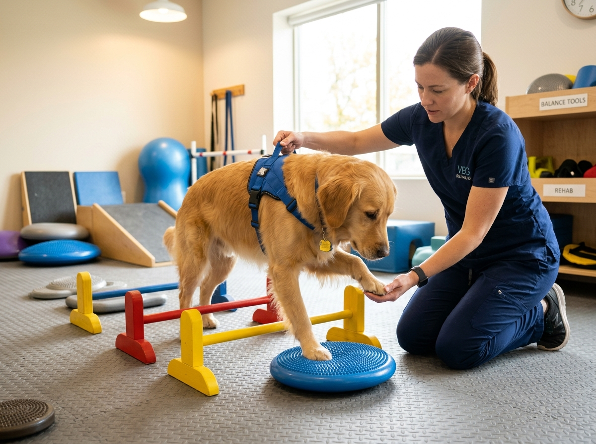
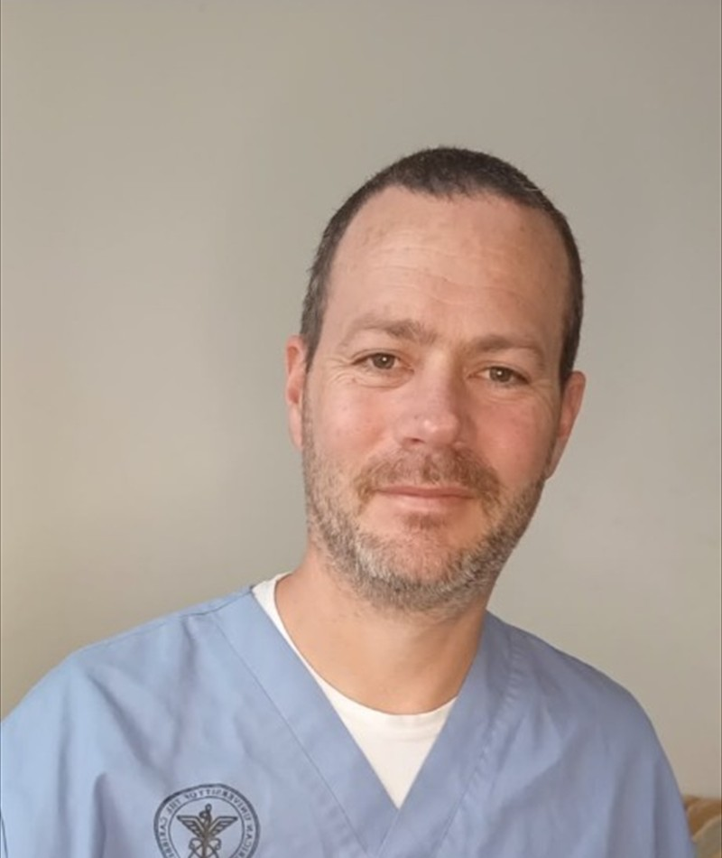

MV Mariano Bonino
Especialista en Rehabilitación Motriz y NeurologíaRecuperación neurológica funcional y reeducación de marcha
La rehabilitación motriz está orientada a animales que han sufrido una pérdida parcial (paresia) o total (plejía/parálisis) de su capacidad para caminar. El objetivo es estimular la neuroplasticidad, reactivar las vías medulares y reeducar los reflejos posturales para devolver la marcha funcional autónoma.
Duración de Sesión
50 a 60 minutos
Técnicas Empleadas
Electroestimulación (FES/TENS), propiocepción, arneses y marcha asistida
Objetivo Clínico
Reactivación neuromuscular y bipedestación progresiva
Conocé las demás áreas de atención especializadas disponibles en CEFIRE La Plata.
CEFIRE Centro de Fisioterapia y Rehabilitación Veterinaria
MV Mayra Bazán • MV Mariano Bonino • Calle 30 N.° 1367, La Plata
Centro dedicado a la fisioterapia, fisiatría, acupuntura y rehabilitación motriz animal.
Dirección médica a cargo de la MV Mayra Bazán y el MV Mariano Bonino en La Plata, Buenos Aires.
Recuperación de parálisis, paresias y lesiones de columna con enfoque progresivo y sin dolor.
Coordiná un turno o evaluación para tu mascota comunicándote con nuestro equipo.
Dirección: Calle 30 N.° 1367, La Plata
Turnos: Atención con turno previo
© 2026 CEFIREVET - Centro de Fisioterapia y Rehabilitación Veterinaria. Desarrollado por Benji Salinas
Política de Privacidad • Términos y Condiciones • Política de Cookies